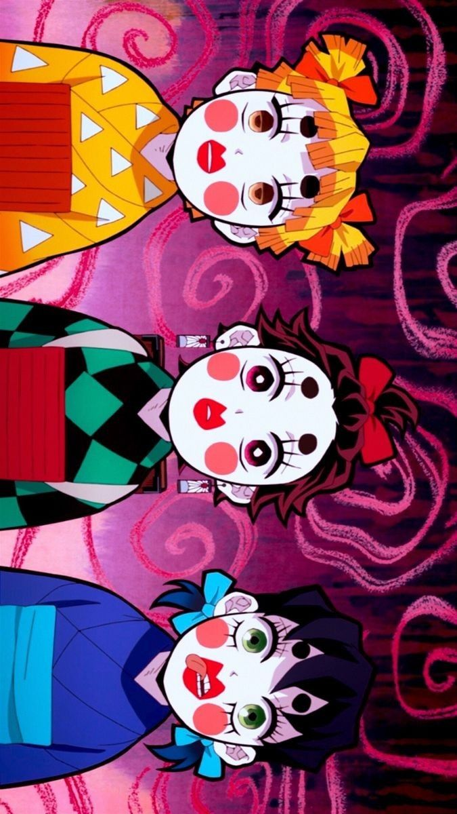
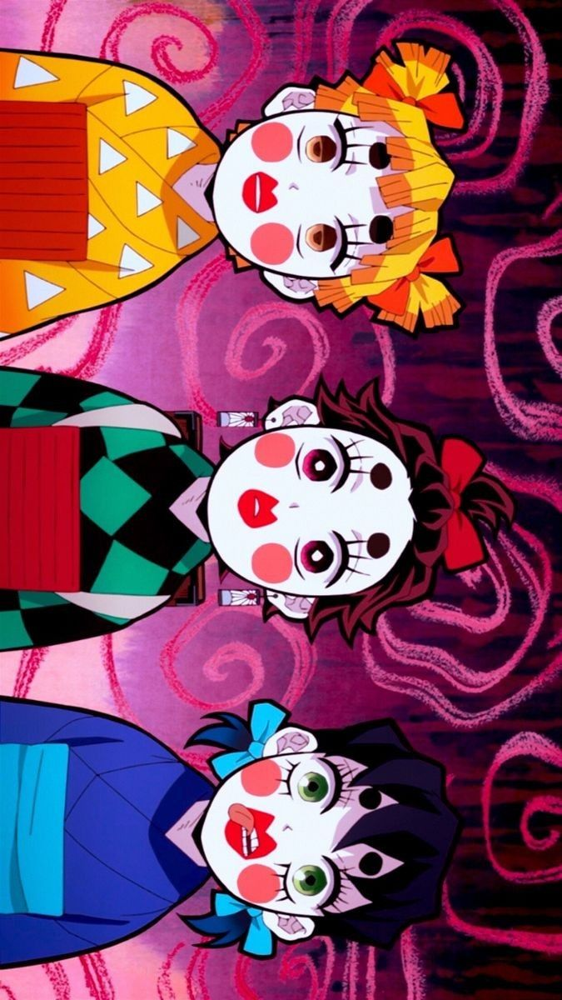

Neste arco, Tanjirou e seus companheiros embarcam em uma nova missão para investigar desaparecimentos de jovens mulheres em uma área conhecida como "Distrito das Luzes Vermelhas", onde as cortesãs prestam serviços de entretenimento para os clientes. A investigação leva Tanjirou e seus amigos a descobrirem a presença de um demônio poderoso e cruel que se esconde por trás dos crimes. Além disso, neste arco são apresentados novos personagens, como Tengen Uzui, um dos nove pilares do Corpo de Caçadores de Demônios, e suas protegidas, as irmãs Kanroji e Tokito. O arco também explora a personalidade e o passado de alguns dos personagens existentes, como Zenitsu e Inosuke.